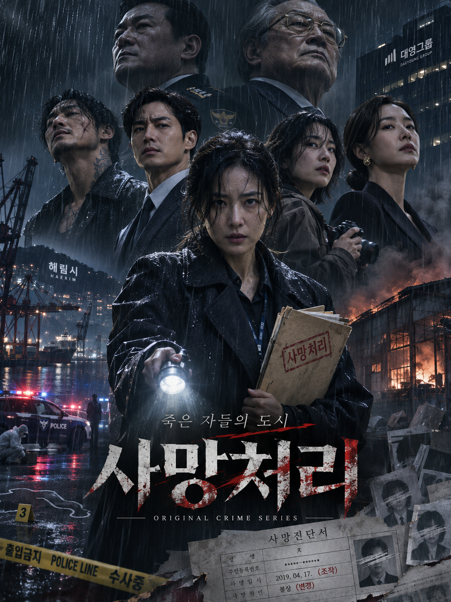

사망처리: 죽은 자들의 도시
- 범죄
- 스릴러
- 미스터리
- 느와르
- 수사
- 복수극
총 12부작
“이 도시에서는 사람이 죽기 전에, 먼저 서류가 죽는다.”
작품의 핵심 이야기
2026년, 가상의 항구도시 해림시.
어느 날 항구 인근에서 한 남성의 시신이 발견된다. 그러나 신원 확인 결과, 그는 15년 전 발생한 대형 화재 사건에서 이미 사망 처리된 인물이었다.
사건을 맡은 강력계 형사 윤서진은 수사를 진행하던 중 당시 공식 사망자 27명 중 8명이 실제로는 살아남았으며, 누군가에 의해 신분이 조작되었다는 충격적인 사실을 발견한다.
이후 과거 사망자로 기록된 사람들이 연이어 살해당하고, 사건의 배후에는 거대 재벌 태성그룹과 폭력조직, 경찰, 검찰, 정치권이 얽힌 거대한 범죄 조직이 존재한다는 사실이 드러난다.
진실에 가까워질수록 믿었던 동료는 적이 되고, 범죄자는 결정적인 증인이 된다. 윤서진은 15년 전 의문의 죽음을 맞은 아버지의 비밀까지 마주하게 된다.
죽은 사람들의 이름으로 은폐된 범죄, 살아 있는 사람들을 지우려는 권력. 과연 누가 진짜 범인이고, 누가 마지막까지 살아남을 것인가?